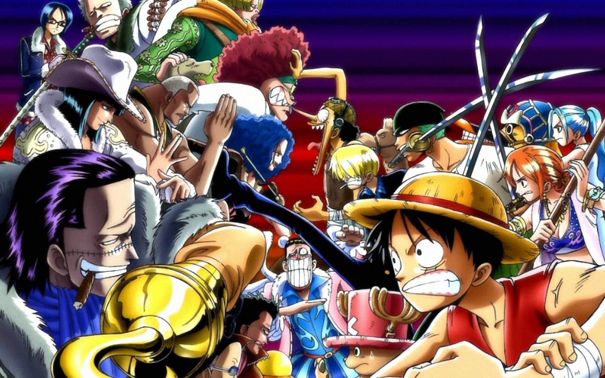
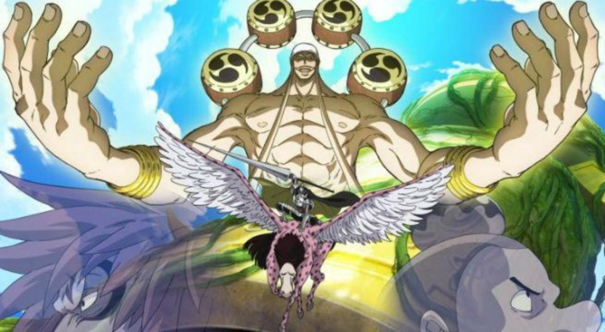
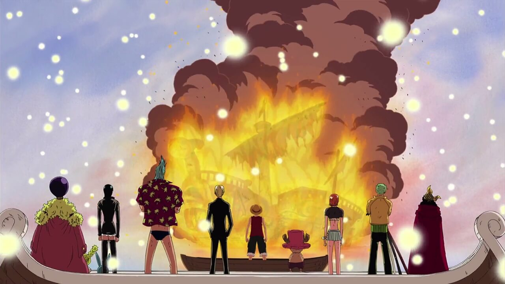
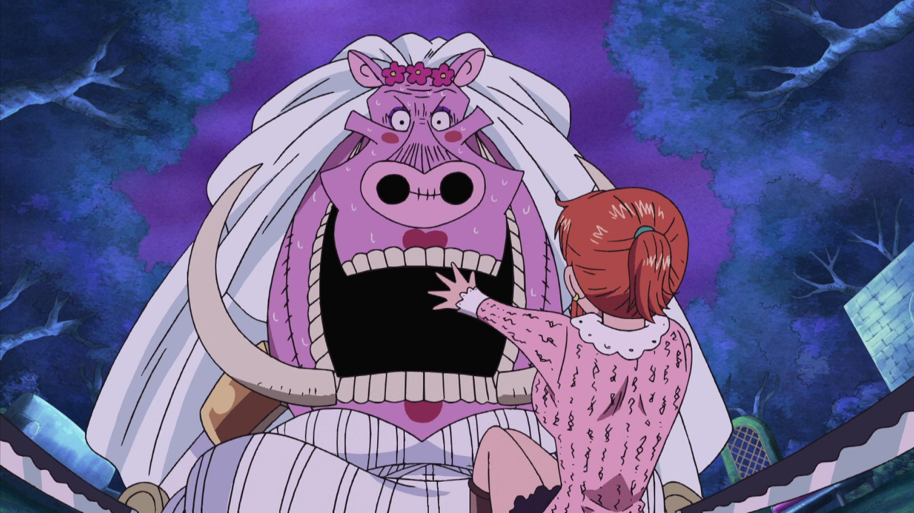
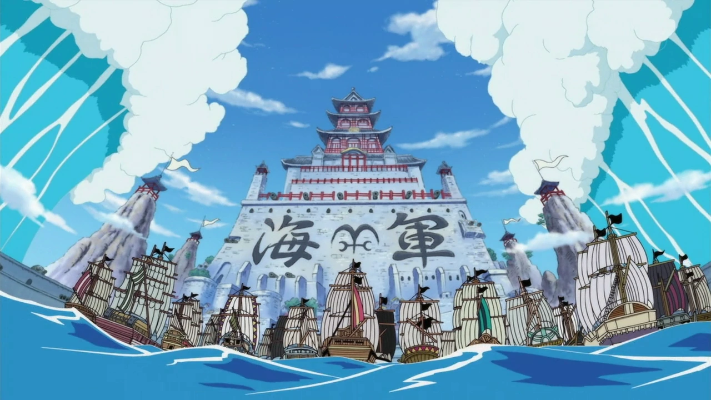
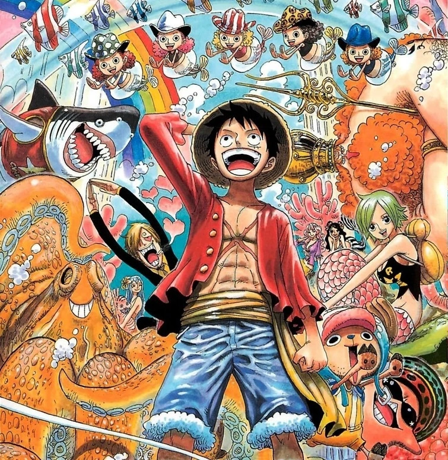
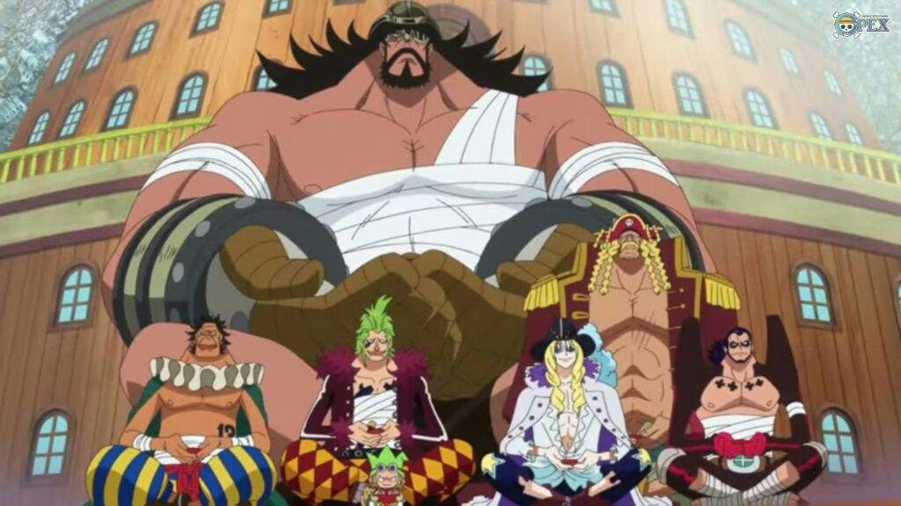
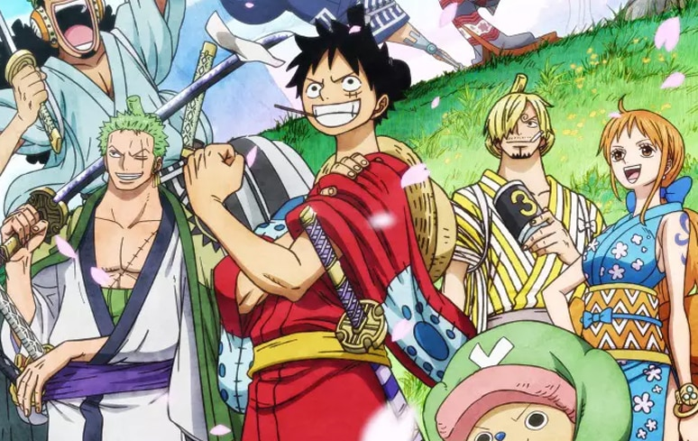

Lista de Sagas:
Saga East Blue

Começamos pela saga que apresentou Luffy ao mundo, a chamada Saga East Blue.
Ela mostra o personagem ainda criança vivendo em East Blue e no início do recrutamento de tripulantes
para ele caçar o One Piece e tentar se tornar o
Rei dos Piratas.
Saga Alabasta

Na segunda saga, intitulada Alabasta (ou Baroque Works) Luffy e sua tripulação
segue na busca pelo One Piece, na tentativa do rapaz se tornar o Rei dos Piratas.
Entretanto, eles precisam ajudar a Nefertari Vivi à chegar na sua pátria antes que
uma guerra se inicie. O problema é que uma organização mal intencionada vai fazer de
tudo para impedir Luffy e seus amigos de chegar em Alabasta.
Saga Skypea

Na terceira saga de One Piece, intitulada Skypieia, os Chapéus de Palha
seguem em sua aventura. Porém Luffy e os outros se deparam com uma terra
cheia de mistérios e envolvida em uma guerra que pode destruir de uma vez Skypiera.
Esse é um dos arcos que já começam com fillers logo no início da saga.
Saga Water Seven

Water 7 é a quarta saga de One Piece, conhecia também por Saga Enies Lobby ou Saga CP9.
Desta vez, os piratas já estão em mar aberto novamente e irão enfrentar alguns perigos em
sua empreitada na busca do One Piece. Um deles é o trapaceiro Foxy, além de um dos três Mirantes
da Marinha, chamado Aokiji. Luffy precisa chegar a Water 7 para encontrar um carpinteiro que
se junte a sua tripulação e conserte seu navio.
Saga Thriller Back

Na quinta saga do anime, Luffy e os tripulantes acabam desembarcando em uma
ilha fantasma chamada Thriller Bark. No local, um estranho personagem usa a
sombra de Luffy para reviver Oars, um lendário gigante. Com a ajuda de Brook,
um esqueleto, Luffy e os outros Chapéus de Palha terão que enfrentar Oars e aquele que
lhe trouxe de volta a vida.
Saga Guerra de Marineford

Conhecida também como Saga Cúpula da Guerra, a Guerra de
Marineford marca o final da primeira metade do anime. Neste ponto
da trama, Luffy e os outros Piratas do Chapéu de Palha são separados
no Arquipélago de Sabaody. E é aqui que as coisas parecem se tornar um
pouco mais difíceis pra Luffy e os outros.
Saga Ilha dos Homens-Peixe

Esta saga apresenta a trama depois de 2 anos do timeskip (avanço de tempo).
Os Chapéus de Palha se reencontram no Arquipélago Sabaody e rumam para
o Novo Mundo, mas para isso eles precisam passar pela Ilha dos Tritões e enfrentar
alguns piratas que estão por ali.
Saga Aliança Pirata

Finalmente Luffy e sua tripulação conseguem chegar ao Novo Mundo, porém
eles acabam se deparando com um antigo laboratório do Dr. Vegapunk e encontram
experimentos ilegais de Caesar Clown. Luffy acaba formando alianças e descobre uma
conspiração existente na ilha de Dressrosa.
Saga Yonkou

Chegamos a saga mais atual de One Piece, intitulado Yonkou. Uma aliança chamada
Ninja-Pirata-Mink-Samurai é formada para derrubar Kaido. É quando Luffy entra
em ação, se envolve com um Yonko chamado Big Mom e precisa embarcar numa missão
de resgate de seu amigo, Sanji.